The Eden Valley, Cumbria
Welcome to Eden, Cumbria's Last Wilderness. Eden, in Cumbria, is an area of distinctive fells, moors, lush valley's, quiet villages, and historic sites. Despite being easily accessible by both road and rail, Eden remains an uncrowded and tranquil place where visitors can find and enjoy uninterrupted views over miles of open spaces that are made for walking and cycle rides in this region rich in flora and fauna. Positioned between the fells and waters of the Lake District to the west and the Dales and moors of the North Pennines to the east, the “Walkers are Welcome Towns”, villages and small communities of Cumbria's Eden Valley welcome visitors to a taste of a country lifestyle, outdoor activities, and an annual programme of traditional festivals, shows, and sporting challenges. The choices of Eden holiday accommodation are as wide ranging as the landscapes. Many are in a rural setting close to established tracks, trails, and unclassified narrow roads laid out on tracks which existed long before the motor car and when horse drawn vehicles were the only means of transport. Visitors can choose from Cottages to rent, Bed and Breakfast's, Guest Houses, Hotel's, or, put up a tent on a beautifully located and well appointed campsite. |
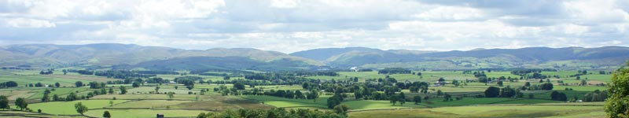 |
Towns and Villages of the Eden Valley |
Penrith |
Penrith is the Eden Valley's biggest town. It was established as a Celtic settlement about 500 B.C. but remains of stone circles and earthen mounds nearby have been dated at around 2000 to 3000 B.C. The castle, whose ruins stand opposite Penrith Railway Station, was originally built at the end of the 14th C as a defence against these attacks. Despite this, Penrith's easily accessible location enabled it to develop as a thriving market town, and by the 1700's it was an important cattle market for all the region. There's a wide choice of visitor accommodations in this “Walkers are Welcome “ town which together with a varied selection of shopping outlets and amenities make it an ideal base for exploring the Eden Valley. Penrith has excellent road and rail connections. The Railway Station is a stop on the West Coast line operating between London and Glasgow, and is a main pick up and drop off point for local and long distance bus services. |
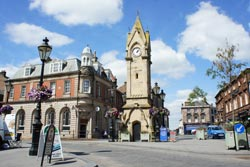 |
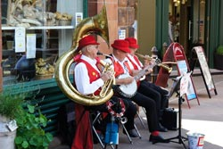 |
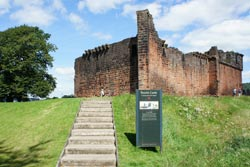 |
Penrith Attractions: |
||
| Aira Force Waterfall (Ullswater) | Brougham Castle | Lowther Castle |
| Penrith Castle | Penrith Castle Park | Dalemain Historic House and Gardens |
| Long Meg Stone Circle | Little Meg Stone Circle | Penrith Beacon |
| Hutton-in-the-Forest Historic House and Gardens | Noahs Ark Softplay Centre | Penrith Museum |
| Mayburgh Henge and King Arthur's Round Table | Rheged Discovery Centre | Lakeland Birds of Prey Centre |
| Parkfoot Pony Trekking Centre | Town Trails | St Andrews Church |
| Eden Outdoor Adventures | Penrith Leisure Centre | Penrith Golf Club |
| For more information on the above attractions in and around Penrith, visit our Penrith Information page. | ||
| You can also contact the Penrith Tourist Information Centre. The Centre is housed alongside the museum in Middlegate. It stocks a wide range of walking and cycling leaflets, bus and train timetables and much more. Opening times are 9.30am till 5pm from Monday to Saturday and 11am till 4pm on Sundays. Telephone: 01768 867466. Email: pen.tic@eden.gov.uk |
||
| Visit our Penrith Accommodation page for a selection of hotels, B&B's and self catering cottages. | ||
Kirkby Stephen |
The “Walkers are Welcome” market town of Kirkby Stephen stands at the upper end of the of the Eden Valley. Kirkby Stephen is the gateway to walks, cycle rides and uninterrupted views of the spectacular Eden Valley countryside. Visitors to Kirkby Stephen and those walking Wainwrights well known C2C will find a good choice of shopping outlets, a post office, cash points, High Street Bank, a tourist information centre, places to eat, and comfortable accommodations of all types. |
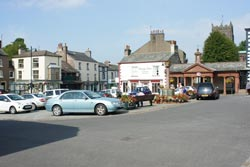 |
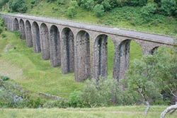 |
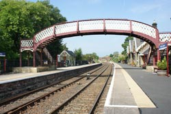 |
Kirkby Stephen Attractions: |
||
| Settle to Carlisle Railway | Stainmore Railway Company | Pendragon Castle |
| Lammerside Castle | Walking, Cycling and Fishing | |
| More information on these attractions and more can be found on our Kirkby Stephen Information page or you can contact or visit: Upper Eden Visitor Centre The Market Square. Email ks.tic@eden.gov.uk Telephone. 017683 71199. |
||
Appleby-in-Westmorland |
Appleby, in Cumbria's Eden Valley is a small market town with a strong sense of community, outdoor activities, surrounded by natural features, and an interesting history. It belonged to Scotland until ownership was transferred to England in 1092 and for many years suffered cross border raids. Today, it is known by many for its annual 300 year old horse fair when each June, Gypsies and Travellers gather for a week of horse trading. This event has become world famous and is said to be the largest of its kind in Europe attracting thousands of visitors. Appleby stands in a remote quiet area of the Eden Valley, surrounded by limestone uplands, scenic valleys and lush farmland. Together with the unspoiled beauty of the countryside, visitors will find historic houses and buildings, castles, ancient sites, nature reserves and a series of traditional events such as hound trailing, fell racing, Cumberland & Westmorland Wrestling, rush bearing and country fairs demonstrating Cumbrian heritage. Appleby is one of the Eden Valley's “Walkers are Welcome” towns and another perfect centre for both long and short distance walks, hikes, adventure challenges, cycle rides and mountain biking. The town's shops, stores, restaurants and cafés offer plenty of choice, and there's a range of amenities to help visitors enjoy their stay in this walker and bicycle friendly Eden Valley town. Holiday accommodations are available within Appleby and neighbouring villages, but please note however that accommodation will be difficult to find during the week of the Horse Fair unless booked several months in advance. |
Some events in Appleby's History: 1648. Appleby Castle captured by Cromwell's Roundheads. Large numbers of high ranking officers taken prisoner including 15 Colonels, 9 Lieutenant Colonels, and 6 Majors together with 1200 horses, 1000 weapons, and all the ammunition. 1675. Geoffrey Braidley and Isabel Braidley convicted of stealing. They were sentenced to be placed in the stocks from 10am till 4pm over a number of days. 1793. January 18th. William Graham of Appleby convicted of stealing a linen shirt costing around 10 D (approximately 4 New Pence). He was sentenced to be stripped to the waist and publicly whipped through the market on the next Saturday and imprisoned for 3 months. 1817. The Low Cross Monument at the lower end of Boroughgate was rebuilt. 1818. The High Cross Monument at the upper end of Boroughgate was rebuilt and the inscription of “ Retain your Loyalty-Preserve your Rights” was added. 1827. July 9th . John Copeland sentenced to jail for 9 months and publicly whipped on his bare back for an assault on Isabella Percival. According to records, this was the last instance of public whipping meted out as a punishment by the Quarter Sessions in Appleby. |
| Historical Figures: Lady Anne Clifford (1590 – 1676) daughter of the 3rd Earl of Cumberland, ranks high on the list of historical figures associated with Appleby. She devoted the last 26 years of her life to restoring the castles of Appleby, Pendragon and Brough and building churches and alms houses for the poor. One of her legacies, still in use today, are the alms houses of St Annes Hospital built in 1651 in a cobbled courtyard at the top of Boroughgate close to the entrance to the castle. |
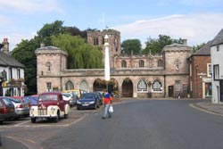 |
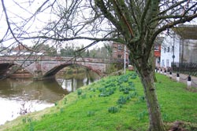 |
Appleby Attractions |
|
| Appleby Horse Fair | Appleby Castle |
| St Lawrence Church | Settle to Carlisle Railway |
| Appleby Leisure Centre | Rutter Force |
| Walking and Cycling Routes | Appleby Golf Club |
| Fishing | |
| Visit our Appleby Information page for more details about Appleby and surrounding area | |
| Appleby Tourist Information Centre Situated in the historic Moot Hall at the lower end of Boroughgate. It stocks free leaflets of local town guides, walking and cycling guides, bus and train services and local maps. It has level access to the information desk, a wheelchair accessible toilet, and an exhibition room with monthly displays of local crafts. Open Monday to Saturday from 9.30am till 5pm. Open Sunday 10.30am till 2.30pm. Telephone 017683 51177. Email: tic@applebytown.org.uk |
|
Alston |
Alston is England's highest market town. Despite its isolation and standing at an altitude of 1000 feet, Alston is easily accessible along high exposed roads with considerable height gains which have been voted in the top ten of the U.K's most scenic drives. Alston is a town of distinctive character, well apart from factories and busy motorways, but in a landscape rich in wildlife, flora, fauna, ancient history, outdoor activities, and for pure escape. |
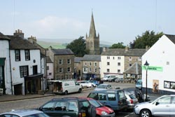 |
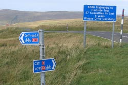 |
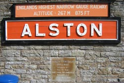 |
Alston Attractions |
||
| South Tynedale Railway | Walk or cycle the South Tyne Trail | Hartside Pass |
| Ashgill Force | Epiacum Roman Fort. (Whitley Castle) | Alston Town Hall |
| St Augustine of Canterbury Church | The Hub Museum | Alston Town Treasure Trail |
| Alston Golf Course | Alston Bowling Club | Winter Sports |
| Visit our Alston Information page for more details on the above attractions and others in the area.. | ||
| Tourist Information Centre The centre is located in the town hall. Visitors will find a selection of guides, leaflets, maps and advice from knowledgeable staff members. Get your fishing licence here also. Opening hours are Monday to Saturday from 10am till 5pm and 11am till 3pm on Sundays. Email; alston.tic@eden.gov.uk Telephone 01434 382244. |
||
Brough |
Brough is a village on the lower eastern edge of the Eden Valley. In the 18th C., when travel by stagecoach was at its height, Brough was an important stage stop on the route between London and Scotland. Horses could be changed, and passengers had a choice from several inns for a meal and an overnight rest. It was also a busy market site with large numbers of Scottish cattle being sold to local farmers whilst on route south to markets as far away as London. Geese too, were driven for long distances with their feet protected by layers of sand and tar. Today, Brough is not only a convenient stopover, but an ideal Eden Valley holiday base. |
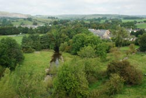 |
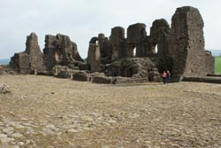 |
Brough Attractions: |
|
| Brough Castle The castle stands on a ridge above the half of the village known as Church Brough. It was built on the site of a Roman fort early in the 11th C. In 1174, it was attacked by the Scottish King William the Lion, and much of it destroyed after the surrender of the defenders. It was rebuilt in 1180 and a “Keep” added, but in 1521 it was fire damaged and remained in disrepair until restoration by Lady Anne Clifford between 1660 and 1676. After her death it gradually fell into ruin, but significant sections remain to the present day. The castle is open to the public daily from 10am till 5pm. Information panels are on the site explaining the layout. |
River Stone Sheep Fold The acclaimed artist, Andy Goldsworthy and one time resident of Brough, was commissioned by Cumbria County Council to celebrate this “Perfect Republic of Shepherds” as part of the U.K. Year of Visual Arts. Together with a team of drystone wallers led by local expert Steve Allen, almost 50 sheepfolds were completed which together amount to the biggest sculpture in the world. For details and a photograph of River Stone Fold at Deadman Gill near Brough and others in the Eden Valley, go to www.edenbenchmarks.org.uk/sheepfolds.htm |
| Brough Agricultural Show An annual event held in August. Special attractions included in this traditional show of livestock and other animals are vintage tractor displays, classic cars and commercial vehicles, drystone walling, and a full programme of family activities. www.brough-show.org.uk |
St. Michael Church The oldest surviving parts of this 12th C church include about 20 metres of the south wall and the main doorway with Norman beakheads and chevrons. In 1174 it was ransacked by the army of William the Lion of Scotland during the attack and siege of nearby Brough Castle. It was restored, but most of the existing structure was built between the 14th C and 16th C., when the aisle with the eastern chapel were added. Open to visitors from 10am till 4pm daily. |
| Argill Woods A steep sided valley of waterfalls and pools providing great Springtime flower displays especially those of bluebells. It's a Site of Special Scientific Interest open all year round within easy reach of Brough. www.cumbriawildlifetrust.org.uk/reserves/argill-woods |
Brough Castle Tea Room and Ice Cream Parlour Speciality teas, coffees, homemade soups, fresh sandwiches, toasties, a daily specials board, and a wide choice of homemade ice creams. Outdoor play area and seating with lovely views over Brough to the surrounding fells. Disabled access and toilets. |
| Appleby Horse Fair Brough is a convenient place to stay when visiting the hugely popular annual fair. Visitors are strongly advised to book early to secure accommodation. www.applebyfair.org |
Brough Farmers Market Markets are held on the third Saturday of each month entirely under cover in the Memorial Hall. |
| Great Musgrave Rush Bearing Procession On the first Saturday of July each year a procession of children and adults makes its way from the Village Institute to St. Theobalds Church. The boys carry rushes, and the girls, flowers and crowns. This ancient custom is one of only a few still surviving in the area, and commemorates the times when the church floor was of earth and rushes were laid on it for warmth. Great Musgrave is situated one mile from Brough. |
|
| Transport A regular bus service 563 operated by Grand Prix Services connects Brough to Kirkby Stephen, Appleby and Penrith. For details of timetables and private hire including airport runs telephone 017683 41328 or visit www.grandprixservices.co.uk |
Shap Village |
The “Walkers and Cyclists are Welcome” village of Shap on the edge of the Lake District National Park, marks the entry to the Eden Valley on Wainwrights Coast 2 Coast Walk and the Lands End to John O' Groats Cycle Route. Shap Village Amenities include: Shap, on the A6 and 14 miles from Penrith, offers a range of visitor accommodations consisting of a 17th C coaching inn, bed and breakfasts, a hostel and camping pitches. |
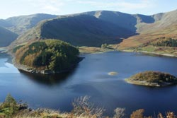 |
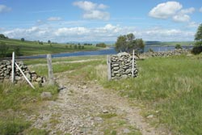 |
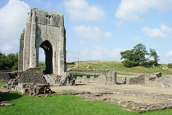 |
Shap Local Attractions: |
|
| Haweswater Reservoir and R.S.P.B. Nature Reserve Haweswater, 7 miles from Shap in the tranquil remote Mardale Valley, is a little over 4 miles long and one of the largest lakes in the region. Against much opposition, it was created in 1935 to supply water for Manchester by flooding the two small village communities of Mardale Green and Measand. Today, it's a renowned beauty spot and home of England's only Golden Eagle. Visit in springtime and summer months for Golden Eagles displaying, and sights of many other species of birdlife including peregrines, buzzards, ring ouzels, flycatchers, and ravens with occasional glimpses of red deer and red squirrels. There's a Nature Trail to an eagle viewpoint which is open at all times, but only staffed at weekends from Easter to August, and Bank Holidays from 11am till 4pm. Access is on a narrow unclassified road from the northern end of Shap Village via the small villages of Rosgill and Bampton Grange. No toilets or catering (nearest refreshments at the Haweswater Hotel.) Dogs on leads at all times please. Some roadside parking and small car park at the head of the valley. |
Shap Abbey The remains of the abbey stand next to the River Lowther, one and a half miles from Shap Village. Built in 1199, it was the last abbey to be founded in England and the last one to be dissolved during the Reformation in 1540. Following the dissolution, large amounts of stone were taken and used for other buildings in the area, notably Shap Market Hall and Lowther Castle, but the imposing West Tower remains virtually intact. The abbey is open to the public all year round and admission is free. Access is at the north end of Shap Village along the same narrow unclassified road as that to Haweswater Reservoir. Car parking available. From the car park, cross the footbridge to the abbey grounds. www.sacred-destinations.com/england/shap-abbey |
| Swindale Valley Circular Walk The picturesque valley of Swindale and its waterfalls lies a few miles to the west of Shap village. It's an “away from the crowds” walk of around 10 miles surrounded by scenery which has hardly changed over the centuries. www.lakedistrictwalks.com/swindl.html |
Keld to Shap Abbey Walk A walk of about 3 miles which has been described as one of the undiscovered treasures of Cumbria. It begins not far from Shap in the village of Keld, and takes a route across fields to the 12th C. abbey. Before leaving Keld, it's worth visiting the medieval chapel in the village. It dates back to around the 15th C., and at one time was probably part of the abbey. See note on the front door with instructions for access. |
| Wet Sleddale Walks A network of peaceful walks for all abilities through a mix of wildlife habitats starting from Wet Sleddale Reservoir. The walks extend to Swindale, Mosedale and Ralfland, along routes where there's a good chance of seeing red deer, red squirrels, and, if lucky, a glimpse of otters. There's also Sleddale Hall which was one of the filming locations for “Crow Crag” in the 1987 film Withnail and I. Look out for the old stone bridge from where the drunken Withnail jumped in to the water and tried fishing with a shotgun. Car parking available next to the reservoir. |
3 Rings of Shap Challenge Walk This is an annual event consisting of three walks over distances of 18 miles, 24 miles, and 20 miles, which can be done collectively or individually. Each walk starts and finishes at Shap Memorial Hall where hot food and drinks will be provided all day for entrants. For full details go to www.ldwa.org.uk/Cumbria/W/26/three-rings-of-shap.html |
| Fishing Limited fishing is allowed in Wet Sleddale Reservoir between July and September under the “Go Wild Scheme”. Details at www.edenriverstrust.org.uk |
Shap Open Air Swimming Pool Situated in the village at the top of Memorial Park; it is said to be Englands highest heated outdoor swimming pool. It's operated entirely by volunteers and open daily from May until September. |
| Shap Village Memorial Park Cricket and football pitches, bowls, childrens play area, hard tennis courts. Free car parking and public toilets. |
|
Ravenstonedale |
Ravenstonedale is a small Eden Valley village retaining many of the characteristics of a traditional way of life 5 miles to the south of Kirkby Stephen. It's a well kept community of a few hundred residents, virtually traffic free, and a convenient starting point for many walks including those to the high level routes of the Howgills. |
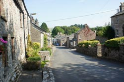 |
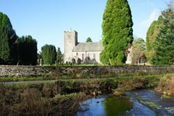 |
Ravenstonedale Attractions: |
|
| St. Oswald's The 18th C., Parish Church of stands on a site where Saxon relics show that Christian worship has existed here for many centuries. Inside the church are are several interesting features such as pews facing the central aisle, and stained glass windows which include one dedicated to a woman named Elizabeth Gaunt. Elizabeth was the last woman to be burnt at the stake on October 4th 1685. The church was a place of sanctuary for anyone accused of a crime seeking a fair trial, but, only if the accused could toll the church bell once. To the north side of the church are excavated remains of a 12th C Gilbertine Priory. Leaflets in the church give details about St Gilbert and the Gilbertine Order. |
|
| Childrens Play Area A well laid out play and picnic area opposite the church across the wooden bridge over Scandal Beck. |
Tennis court A tarmac surface tennis court for visitors and locals close to the childrens play area. Make a booking at the Black Swan Hotel. |
| Riverside Golf Club A picturesque 9/18 hole course open to non-members. www.riverside-golf-club.co.uk |
Stone Trail Riding Centre A holiday and trekking centre with access to miles of bridleways and riding trails. Open all year round and all levels of experience are welcome. Advance booking is essential. www.stonetrailridingcentre.com |
| Heritage Coach Tours. From Easter to October a once a week service aboard a classic bus from Ravenstonedale via Kirby Stephen and the beautiful Mallerstang Valley to Hawes. For this route and others in the area visit the website. www.cumbriaclassiccoaches.co.uk |
Scar Art Gallery Visitors to the gallery, next to the Black Swan Hotel, are offered expert tuition to help them paint local scenes around the village. The gallery is open from mid-April till October on Fridays from 2pm until 5pm and Saturdays from 10am till 5pm. Telephone 015396 23308. |
| Ravenstonedale Music Festival A not to be missed 3 day event held each June. It is now established as one of the best in the region with great line-ups and a wonderful atmosphere www.ravenstonedalefestival.co.uk |
|
Crosby Ravensworth |
Crosby Ravensworth is a small village situated a far cry from the busy world in the heart of what has been called “England's Last Wilderness”. Scattered around are self catering holiday cottages with views over open countryside and beyond to to the Howgills and Pennines, together with walker friendly and dog friendly bed and breakfasts, some on working farms, who happily welcome guests even if it's only for a one night stopover. |
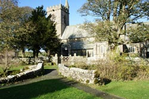 |
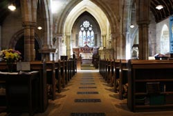 |
Crosby Ravensworth Attractions: |
|
| The Butchers Arms This is Crosby Ravensworth's one and only pub. It was saved from closure following a huge community effort by the residents of Crosby Ravensworth and neighbouring villages to raise funds to buy it from the brewery owners. The Lyvennet Valley Community Pub Appeal, with an invitation to become a shareholder, brought in cash from all over the country as well as Europe, Singapore, Australia and the United States. The Butchers Arms is now a thriving traditional Cumbrian pub and the focal point for the social life not only of Crosby Ravensworth but of all the small villages in the Lyvennet Valley. Locally brewed ales; food from local produce served at the bar or restaurant; a pub sports venue; local events; music and culture. |
St Lawrence Church The first mention of a church on this site was in 1109. At that time it was a wooden building later to be destroyed during a Scots cross border raid. The present church was built in 1150 with additions to it in the 13th C, 15th C and 19th C's. It's a fine old building of many interesting features including a 7th C Medieval Cross alongside. |
| Black Dub A monument erected to mark the place where King Charles 2nd stopped to address his army on his march south to England in August 1651 and later defeated at the Battle of Worcester. It stands at the source of the River Lyvennet on Crosby Ravensworth Fell. NY. 60418. |
A Pinfold Cairn |
Orton |
Orton is another of the Eden Valley's small villages set amid a wealth of outdoor activities. Orton is an ideal stopover on the Coast 2 Coast Route. A small general store/post office and cash point sells foodstuffs, newspapers, magazines, tobacco, sandwiches, cold drinks, ice creams and sweets. Open Monday to Saturday from 8am till 6pm. |
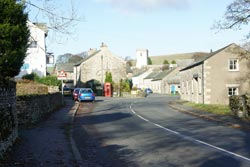 |
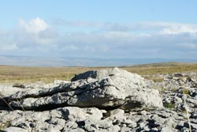 |
Orton Attractions: |
|
| Great Asby Scar A National Nature Reserve and Site of Special Scientific Interest. Great Asby Scar on the fells above Orton has some of the best examples of Limestone Pavement in the U.K. A variety of plants and rare herbs can be found growing between the gaps in the limestone and the surrounding moorland attracts many species of birds during their migration together with a wide range of resident species. This area is on the route of the Coast 2 Coast Walk. |
Tarn Sike Tarn Sike is part of Sunbiggin Tarn & Moors Site of Special Scientific Interest. It's open all the year round but the best time for orchids; birds eye primrose; wild flowers; wildlife and butterflies is between April and July. The site is very wet and there are no paths around the reserve. To get there, take the right turn from Orton signposted Raisebeck and follow the sign for Sunbiggin Tarn, Asby and Soulby. Continue on this road until after crossing a cattle grid the road becomes open fell. Tarn Sike is reached by following the boundary wall on the north side for about 300 metres. No dogs allowed. |
Lazonby |
Lazonby is in the north of the Eden Valley 8 miles from Penrith. Lazonby is one of the larger villages. It has a church, two pubs, a supermarket, a heated open air swimming pool, easy access to the Eden Benchmarks, and is a station stop on the scenic Settle to Carlisle Railway. |
Kirkoswald |
| Kirkoswald is a several times winner of the “Best kept Village” competition. The name means “Oswalds Church” after Oswald, the King of Cumbria who ruled the Eden Valley in the 7th C. The church is unusual, with its bell instead of being in the tower, has been placed on the top of a hill several hundred yards from the church. This was done for a clear warning to be heard by villagers when it was rung to warn of an approach by a Reivers raiding party. There are ruins of a 13th C castle of which only a 60 feet high tower remains. It's in a dangerous condition and should only be viewed from the safe distance of a footpath which passes nearby. |
Great salkeld |
| Great Salkeld is a picturesque village 2 miles from Lazonby close to the stone circle of Long Meg and her Daughters. Standing in the centre of the village is the Norman church of St. Cuthbert's. There's been a church on this site since 880 A.D. and the present building since the 11th C. It's one of three Cumbrian churches whose towers were strengthened to create a refuge during raids by Reivers. Inside are several features of historical interest. Armour hangs on the west wall above the heavily studded door leading to the narrow stairway to the tower which was collected after a skirmish between Royalist and Parliamentarian forces. A tapestry hanging on the north wall of the nave was worked by the women of Great Salkeld to mark the anniversary of the death of St. Cuthbert. A stone effigy of 1319 near the altar is of a priest named Thomas de Caldebec. |
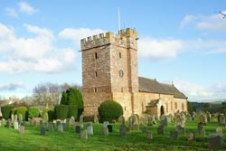 |
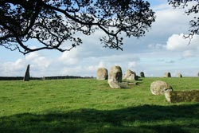 |
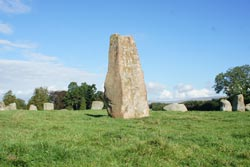 |
Little Salkeld |
| The plentiful availability of running water in the area led to the establishment of many mills. The one built in 1751 in Little Salkeld still operates today and produces organic and biodynamic stoneground flour and cereals. www.organicmill.co.uk Nearby, beside the River Eden, are Lacy's Caves carved out of the rock on the instructions of Colonel Lacy of Salkeld Hall who gained fame for trying to blow up the stones of Long Meg and her Daughters. |
Armathwaite |
Armathwaite is one of several peaceful villages standing close to the River Eden on its route north through the Eden Valley. It's an area renowned for the quality of angling, and the few miles of the river flowing past Armathwaite provide some of the best salmon and wild trout fishing in the north of England. Riverside walks from the village lead past Armathwaite Castle, a four storey Peel Tower converted to a country house in 1752, and beyond to unusual stone carvings of five faces in a sandstone cliff. An inscription, possibly a tribute to the joys of fishing, appears together with the carvings and reads; “Oh the Fishers Gentle Life If it's for a walking holiday, getting out and about by bicycle, fishing, attending sporting events or traditional shows, visitors to this area of rare peace and quiet have a splendid choice of accommodations both in and around Armathwaite. These range from cosy self catering holiday cottages, bed and breakfast in an olde worlde inn, guest houses, hotels, camping and glamping sites. |
Armathwaite Attractions: |
|
Armathwaite is a village of few amenities. It has two traditional pubs selling real ales and home cooked food, a combined village shop and post office, and is the last station stop before Carlisle on the Settle to Carlisle Railway. It will be of interest to railway enthusiasts to know that the signal box at Armathwaite station is open to the public for accompanied tours on an occasional informal basis. If a “Friend of the Settle/Carlisle Railway” is working on the station at the time of your visit, do please ask if it's convenient to have a look at the beautifully restored piece of railway history in its authentic yellow and red paint scheme. |
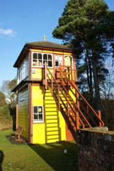 |
| Fishing Rods available for the season, week, or days for underfished private waters. Telephone Howerd Oliver on 01768 898229 or go to www.cumbriaflyfishing.co.uk |
|
Eden Valley Public Transport Services |
Buses: |
|
| Fell Runner Buses. Serve most of the villages in the Penrith area. Phone 01768 88232. www.fellrunnerbus.co.uk |
Grand Prix Coaches. Services from Penrith to Kirkby Stephen and intermediate villages. Based in Brough. Phone 017683 41328 www.grandprixservices.co.uk |
| N.B.M. Travel. Serves the Penrith area. www.nbmtravel.co.uk |
Stagecoach. Services within the Eden Valley. Phone 0871 200 22 33. www.stagecoachbus.com |
| Cumbria Classic Coaches. Based in Ravenstonedale. www.cumbriaclassiccoaches.co.uk | |
Rail: |
|
| Penrith is one of three stations in Cumbria on the West Coast Main Line passenger services between London, the West Midlands, the North West, North Wales and Southern Scotland. | Settle to Carlisle Railway. Station stops at Kirkby Stephen; Appleby; Langwathby; Lazonby;
Armathwaite and Carlisle. www.settle-carlisle.co.uk |
By Road: |
|
For visitors to the Eden valley travelling from the north, leave the M6 at Junction 40 (Penrith). Visitors to the Eden Valley travelling from the south, leave the M6 at Junction 38, (Tebay) and join the A685 to Kirkby Stephen or the B6260 to Appleby. |
|